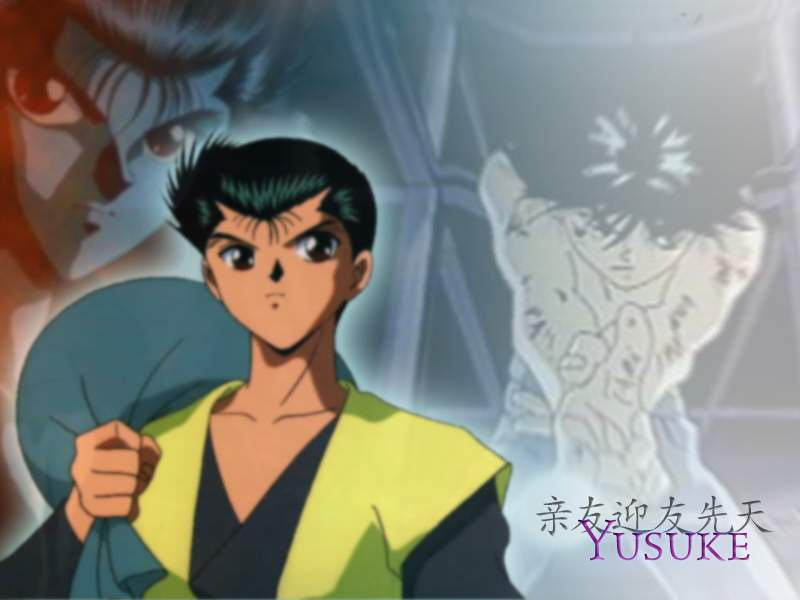

Yusuke

Name: Yusuke Urameshi
Age: 14
Race: Human/Demon ancestry
Alignment: good
Siblings: none
Marital Status: dateing kayko
Children: none
Moves: Spirit Gun,Shot Gun,Spirit Fist,Shot Gun Double Barrel,Bukujutsu, kai kai
Transformations: none
Level: 90,440
Items: none
Extra: Yusuke Urameshi is not exactly what you'd call an angel.In fact,some might call him down right devilish.But when he dies in an accident trying to save a child,he finds himself in the Spirit World,too good for hell,but not good enough for heaven.Yusuke is now a Spirit Detective for Koenma,with the help of Boton,Kuwabara,Kurama and Hiei he must track down Demons and defeat them.He got special training from Genkai who taught him the Shot gun technique.Then was sent to take out Suzaku who almost beat him with the Prism of Seven and Prism of Seven Storm of Torment,luckily Yusuke was able to Shot gun him and the copies killing Suzaku.When he got back he expected his girlfriend Kayko to hurt him but she told him that he should tell her where he's going next time.
AIM: SpiritGunYusuke